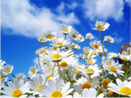
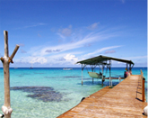
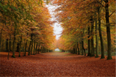
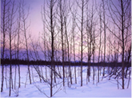

The Korean Peninsula is located in North-East Asia. It is bordered by the Amnok River (Yalu River) to the northwest, separating Korea from China, and the Duman River (Tumen River) to the northeast which separates Korea from both China and Russia. The country itself is flanked by the Yellow Sea to its west and the East Sea to the east. There are several notable islands that surround the peninsula including Jejudo, Ulleungdo and Dokdo.
The Korean peninsula is roughly 1,030 km (612 miles) long and 175 km (105 miles) wide at its narrowest point. Korea's total land area is 100,033 sq km, and it has a population of 49.8 million people (2011). Because of its unique geographical location, Korea is a very valuable piece of land and an international hub of Asia.
Mountains cover 70% of Korea's land mass, making it one of the most mountainous regions in the world. The lifting and folding of Korea’s granite and limestone base create a breathtaking landscape of scenic hills and valleys. The mountain range that stretches along the length of the east coast falls steeply into the East Sea, while along the southern and western coasts, the mountains descend gradually to the coastal plains that produce the bulk of Korea’s agricultural crops, especially rice.
► Geographic position - Between 33˚ and 43˚ north latitude, and 124˚ and 131˚ east longitude (including North Korea)
► Highest mountains - Hallasan, Jirisan, Seoraksan
► Rivers - Nakdonggang, Hangang, Geumgang
Weather
Korea has four seasons, with a wet monsoon/summer season in the middle of the year, and a cold winter from November to March. The island of Jeju off the southern coast is the warmest and wettest place in the country. The ideal time to visit Korea is during the autumn months (September-November). During this time, the country experiences warm, sunny weather, skies that are cobalt blue and spectacular foliage that is perhaps the biggest draw. Winters are cold and dry and are a good time to visit if you are interested in winter sports as there are numerous ski resorts. Spring (April-May) is also beautiful with all the cherry blossoms in bloom. However, it is very busy and one needs to book in advance to ensure accommodation is available. The summer months are muggy and hot, and rather crowded. It is also when the monsoon season begins so many activities are subject to the fluctuations of heavy rain.
Spring
Spring lasts from late March to May and is warm. Various flowers, including the picturesque cherry blossom, cover the nation's mountains and fields during this time.
Summer
Summer lasts from June to early September. It is a hot and humid time of the year.
Autumn
Autumn lasts from September to November, and produces mild weather. It is the best season to visit Korea.
Winter
Winter lasts from December to mid-March. It can be bitterly cold during this time due to the influx of cold Siberian air. Heavy snow in the northern and eastern parts of Korea makes for favorable skiing conditions.
